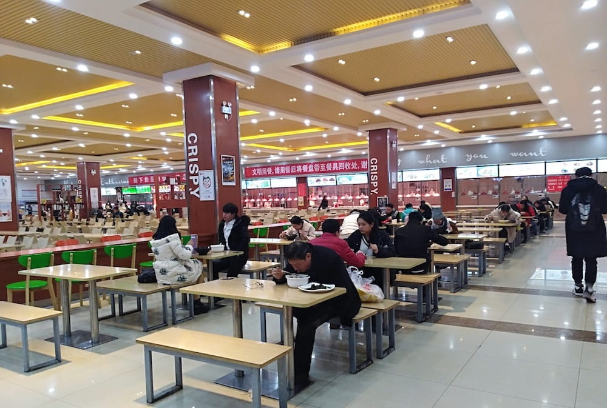
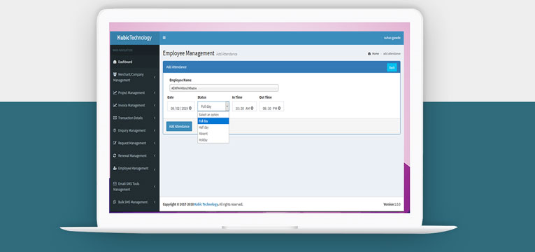

Campus Life
School Church
It was established in 40 A.D
In the year 40 A.D., while praying one night on the tobrt bank, the Virgin appeared with the Child Jesus standing on a pillar and asked Saint James and his eight disciples to build a church on the site, promising that “it will stand from that moment until the end of time in order that God may work miracles and wonders through my intercession for all those who place themselves under my patronage.”

School Library
Was Build In 1980
A school library (or a school library media center) is a library within a school where students, staff, and often, parents of a public or private school have access to a variety of resources. The goal of the school library media center is to ensure that all members of the school community have equitable access "to books and reading, to information, and to information technology. A school library media center "uses all types of media... is automated, and utilizes the Internet [as well as books] for information gathering. School libraries are distinct from public libraries because they serve as "learner-oriented laboratories which support, extend, and individualize the school's curriculum... A school library serves as the center and coordinating agency for all material used in the school.

School Auditorium
Was Build In 1982
The school auditorium, used for school assemblies, teacher and parent functions, fine arts productions and concerts, is fully equipped with lighting and sound systems.
School Achievements

Won 1st in Inter School Debate on Enviroment Pollution
Made a working windturbine project.

Came 2nd in Inter School Football Competition
Were playing against Mumbai high school.

Won 1st in Inter School Science Competition
Made a automatic street light project.
What's New
-
New School Canteen
A cafeteria, sometimes called a canteen outside the U.S., is a type of food service location in which there is little or no waiting staff table service, whether a restaurant or within an institution such as a large office building or school; a school dining location is also referred to as a dining hall or lunchroom. Cafeterias are different from coffeehouses, although the English term came from Latin American Spanish, where it had and still has the meaning "coffeehouse". Instead of table service, there are food-serving counters/stalls or booths, either in a line or allowing arbitrary walking paths. Customers take the food that they desire as they walk along, placing it on a tray. In addition, there are often stations where customers order food, particularly items such as hamburgers or tacos which must be served hot and can be immediately prepared with little waiting. Alternatively, the patron is given a number and the item is brought to their table. For some food items and drinks, such as sodas, water, or the like, customers collect an empty container, pay at the check-out, and fill the container after the check-out. Free unlimited second servings are often allowed under this system. For legal purposes (and the consumption patterns of customers), this system is rarely, if at all, used for alcoholic drinks in the United States.
Implemented Online Attendance Management
1. Accuracy
Accuracy is to be ensuring that the information is correct and without any mistake.
Information accuracy is important because may the life of people depend in it like the medical information at the hospitals, so the information must be accurate.
Accuracy is how close or far off a given set of measurements (observations or readings) are to their true value, while precision is how close or dispersed the measurements are to each other.
In other words, precision is a description of random errors, a measure of statistical variability.
2.Economics
Economics focuses on the behaviour and interactions of economic agents and how economies work. Microeconomics is a field which analyzes what's viewed as basic elements in the economy, including individual agents and markets, their interactions, and the outcomes of interactions.
Individual agents may include, for example, households, firms, buyers, and sellers. Macroeconomics analyzes the economy as a system where production, consumption, saving, and investment interact, and factors affecting it: employment of the resources of labour, capital, and land, currency inflation, economic growth, and public policies that have impact on these elements.
Other broad distinctions within economics include those between positive economics, describing "what is", and normative economics, advocating "what ought to be"; between economic theory and applied economics; between rational and behavioural economics; and between mainstream economics and heterodox economics.
Economic analysis can be applied throughout society, including business, finance, health care, engineering and government.
It is also applied to such diverse subjects as crime, education, the family, feminism, law, philosophy, politics, religion, social institutions, war, science, and the environment.
3.Productivity / Efficiency
Efficiency is the often measurable ability to avoid wasting materials, energy, efforts, money, and time in doing something or in producing a desired result.
In a more general sense, it is the ability to do things well, successfully, and without waste.
As defined by Deborah Stone, efficiency is "thus not a goal in itself.
It is not something we want for its own sake, but rather because it helps us attain more of the things we value."
In more mathematical or scientific terms, it signifies the level of performance that uses the least amount of inputs to achieve the highest amount of output.
It often specifically comprises the capability of a specific application of effort to produce a specific outcome with a minimum amount or quantity of waste, expense, or unnecessary effort.
Efficiency refers to very different inputs and outputs in different fields and industries.
In 2019, the European Commission said: "Resource efficiency means using the Earth's limited resources in a sustainable manner while minimising impacts on the environment.
It allows us to create more with less and to deliver greater value with less input."